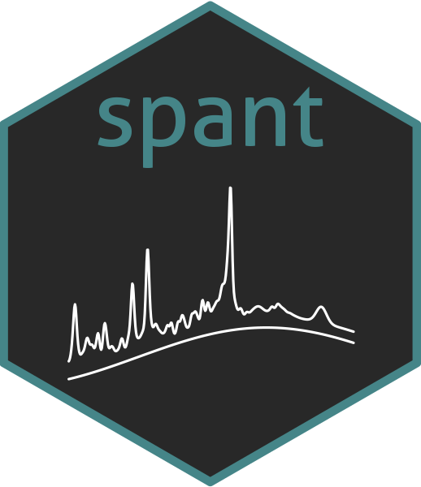

Add noise to an mrs_data object to match a given SNR.
Source:R/mrs_data_proc.R
add_noise_spec_snr.RdAdd noise to an mrs_data object to match a given SNR.
Usage
add_noise_spec_snr(
mrs_data,
target_snr,
sig_region = c(4, 0.5),
ref_data = NULL,
noise_free_input = TRUE
)Arguments
- mrs_data
data to add noise to.
- target_snr
desired spectral SNR, note this assumes the input data is noise-free, eg simulated data (unless noise_free_input is set to FALSE). Note the SNR is estimated from the first scan in the dataset and the same noise level is added to all spectra.
- sig_region
spectral limits to search for the strongest spectral data point.
- ref_data
measure the signal from the first scan in this reference data and apply the same target noise level to mrs_data.
- noise_free_input
accounts for the reference data already containing noise when set to FALSE. Defaults to TRUE.